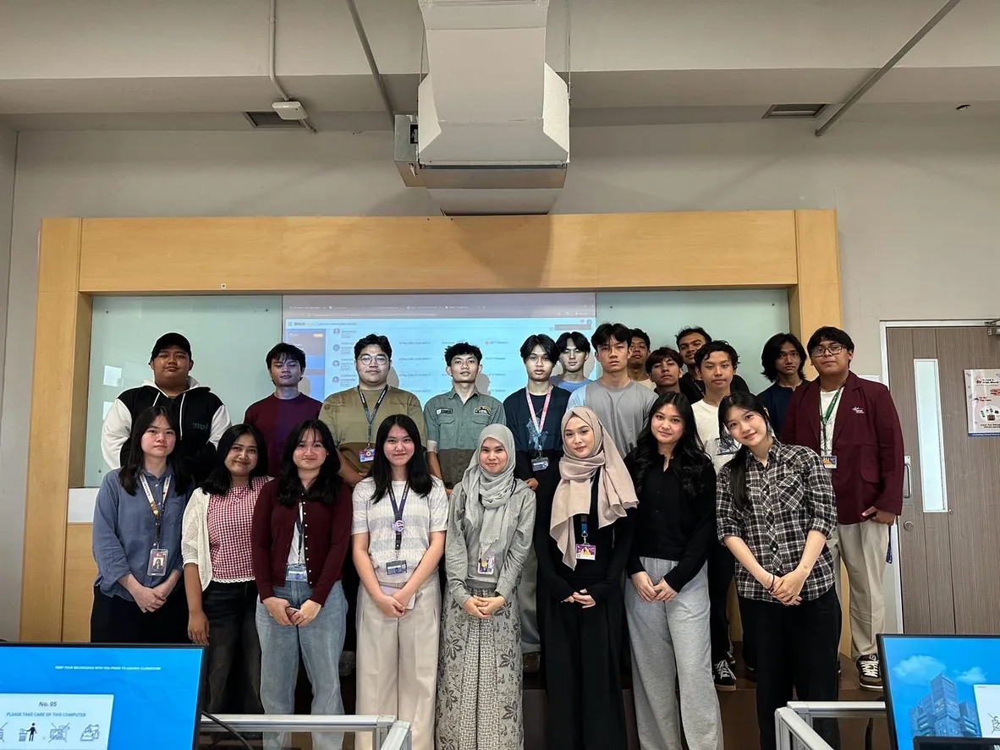
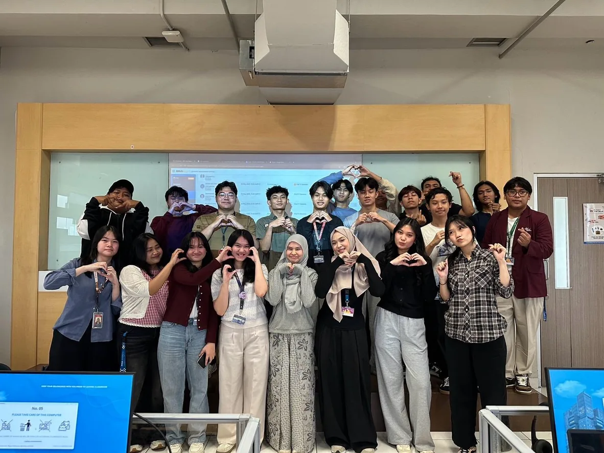

January 2026 – Present
Part-Time Assistant
Information Systems Laboratory, BINUS University
Guided first-year students in Database Fundamentals during the even semester and User Experience Research and Design during the odd semester.
Delivered practical learning sessions, provided hands-on guidance, and supported students throughout their learning process. Collaborated with fellow laboratory assistants to coordinate classes, deliver course materials effectively, and ensure smooth and engaging practical sessions.

